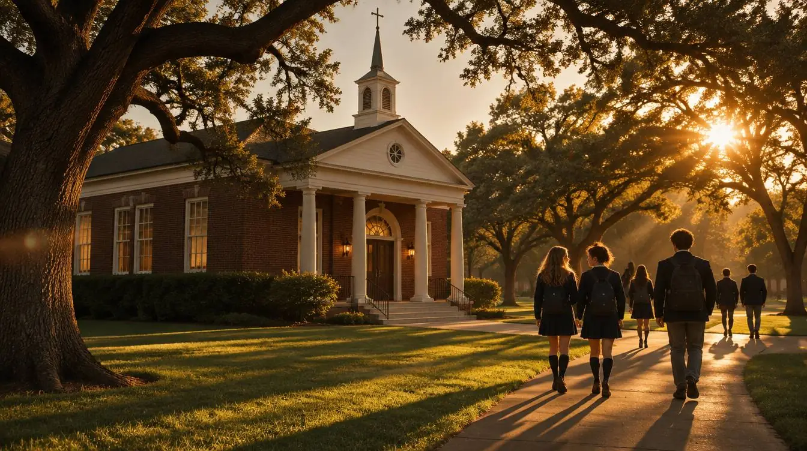

Since 2002, Cornerstone has believed that educating a child takes a Biblical foundation and a true partnership with the family — so that every student will increase in wisdom and stature, and in favor with God and man.

Grow in wisdom.Grow in grace.
A Christ-centered K–12 academy in Bryan, Texas — where every child is known by name.
Scroll
Every day
begins here.
In chapel.
Songs, prayer and a word from Scripture, every morning. On Fridays, every class recites its memory verse together.
“And Jesus increased in wisdom and in stature
and in favor with God and man.”
Small by design.
Exceptional by every measure.
Top 10%Nationally on the Stanford Achievement Test
3 : 1Students to every teacher
2×TCAL State Champions, girls’ basketball
K–12Fully accredited by Cognia (SACS)
One school.
Every season of growing up.
Core academics every morning. Bible, Spanish, art, music, computers and PE every afternoon. Teachers who know your child.
Kindergarten – Grade 5
Lower School
Reading, wonder and Scripture memory. Full-day or part-day core options, with extended care from 7:30 AM to 5:30 PM.
Grades 6 – 8
Middle School
Great books, applied mathematics and lab science — plus Spanish, American Sign Language, band and athletics. NJHS.
Grades 9 – 12
Upper School
College-preparatory rigor, the National Honor Society and dual credit through Blinn College.
Every grade
Faith & Service
Daily Bible classes, chapel, the Joanne Walker Day of Service and work days at Messiah’s Ranch.
Cougar Athletics
Back to back.
State champions.
The Lady Cougars claimed a second straight Texas Christian Athletic League Class 2A title — 60 to 30 over Marshall Christian.
BasketballVolleyballFootballCheerBaseballTrack & Field
International Students
A home in Texas.
A future anywhere.
Cornerstone is SEVP-certified and issues Form I-20 for F-1 students. Families from around the world trust us with their children — and those students are thriving at the top of their class.
Form I-20Issued by the school
Residential careOn-site coordinators
English supportPersonal coaching
College pathwayDual credit · Blinn
Our Heritage
It started with forty believers and one question.
In July 2001, Christians across Bryan–College Station gathered to imagine a school that would surround children with the love of God — and equip them to become whatever God intends.
2002
Doors open
August 18 — eleven kindergarten and pre-K students.
Top 3%
In reading
By 2005, our kindergartners ranked among the nation’s best in total reading.
SACS
Fully accredited
The smallest school ever accredited by the Southern Association.
2006
Science Academy
The first and only Science Academy in Brazos County.
2015
First graduates
A grade added every year — until our first senior class walked.
2022
State champions
The Lady Cougars win back-to-back TCAL Class 2A titles.
Accredited & affiliatedCognia · AdvancED / SACSTCSANCSAPSIATCALNational Honor SocietyNJHS
Sent.
Cornerstone graduates go on to Texas A&M, Harding University, Blinn College and beyond — prepared to go boldly into the world with purpose and love.
Come and see.
Admission is open year-round as space allows. Every family is welcome to a free three-day trial, so your child can experience Cornerstone before you decide.
01
Inquire
Call or email our office to start the conversation.
02
3-day trial
Free days in the classroom — for your child and for you.
03
Apply
Application, enrollment documents and immunization records.
04
Interview
With the principal or a member of the Board.
05
Enroll
Registration secures your child’s seat. Welcome, Cougar.
Traditional full dayK – 12
Part-day coreK – 5
Homeschool enrichmentPart-day electives
Extended care7:30 AM · 3:30–5:30 PM
Family Portal
Your family.
Your school. One place.
Announcements, grades, private messages with teachers, and official school documents — requested in seconds and issued digitally.
Open Family Portal01AnnouncementsEvery notice from school and class, in one feed.
02Teacher messagesDirect, private conversations with every teacher.
03Grades & attendanceAlways current, always clear.
04CertificatesEnrollment letters, transcripts and more — download when ready.